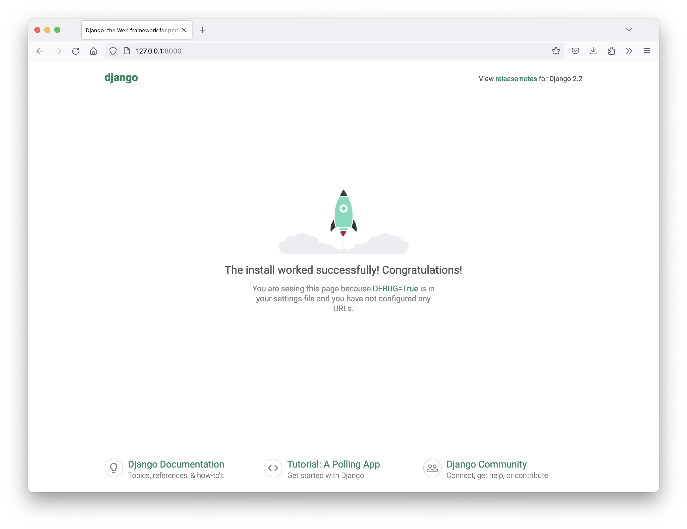
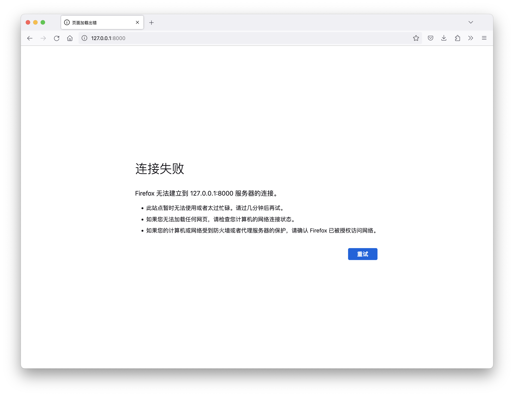

| 课程名称 | 内容 | 目标 |
|---|---|---|
| Django 框架 | 创建 Django 项目，配置 Django, URL 及路由，模版层，数据层, 中间件… | 掌握 Django 项目的搭建，制作出精美的网站 |
| Redis 数据库 | Redis 的数据结构, 命令, 事务, 主从, 哨兵… | 掌握 Redis 数据库的数据结构及在一些经典场景中的使用技巧 |
| 电商项目实战 | 用户模块 / 购物车模块 / 订单 / 支付… | 了解企业级的 Django 电商项目是如何从 0 到 1 搭建出来的 |
网站/微信公众号/小程序后端开发
人工智能平台融合
支持的 Python 版本: 3.5 ~ 3.8
安装开发环境 Python 3.7, Django 2.2.12
conda create -n fullstack python=3.7
activate fullstack
pip install django==2.2.12
测试安装是否成功
import django
django.get_version() # '2.2.12'
# django-admin startproject <项目名>
django-admin startproject mysite
ls # mysite
进入项目文件夹
cd mysite
ls # manage.py mysite
启动 Django 服务 (测试开发阶段)
# python manage.py runserver <端口号 (默认 8000)>
python manage.py runserver
浏览器访问 http://127.0.0.1:8000

执行 ctrl+c 可以关闭服务

(fullstack) ➜ python_django tree mysite
# mysite
# ├── db.sqlite3
# ├── manage.py
# └── mysite
# ├── __init__.py
# ├── __pycache__
# │ ├── __init__.cpython-37.pyc
# │ ├── settings.cpython-37.pyc
# │ ├── urls.cpython-37.pyc
# │ └── wsgi.cpython-37.pyc
# ├── settings.py
# ├── urls.py
# └── wsgi.py
#
# 3 directories, 10 files
manage.py 包含项目管理的子命令, 如:
python manage.py runserver 启动服务python manage.py startapp 创建应用python manage.py migrate 数据库迁移python manage.py 列出所有子命令mysite/mysite
__init__.py: Python 包的初始化文件wsgi.py: Web 服务网关的配置文件 - Django 正式启动时需要用到urls.py: 项目的主路由配置 - HTTP 请求进入 Django 时优先调用settings.py: 项目的配置文件 - 包含项目启动时需要的配置